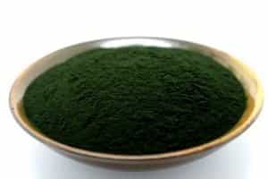
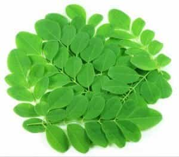
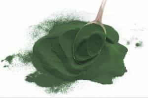
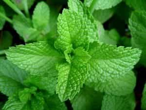
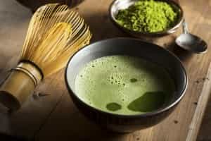
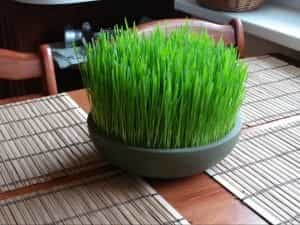
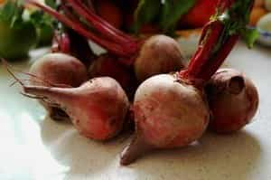

Sponsored Article is ROK's official account that publishes sponsored articles from advertisers. If you are interested hiring a sponsored article for your site, product, or service, visit our advertising page.


The following article was sponsored by Drew Canole
Hey!
My name is Drew Canole, and I’m the founder and CEO of Fitlife.tv. Not only am I a health and fitness trainer, but I’m a Life Transformation Coach as well. What I teach starts with getting you into super human, vibrant health internally first…
Which leads to awesome results on the outside, that will result in the great looking body that you want regardless of your age, size, metabolism, or genetics.
And I’m going to be completely honest with you… Despite what so many other “health” and “fitness” coaches have told you, THIS is the only thing that will make you the best on the inside AND outside as you can be…
Superfoods.
I’m obsessed with superfoods. Here’s why…
Currently, you and I are living in a toxic environment, my friend. Everywhere we go there are more and more toxins creeping up on us. Should you live in fear, build a giant bubble and only go outside in that plastic construct that protects you?
Probably not… even though it’d be better for you, that’s not reasonable.
In studying about toxins and all the nasty things in our food and environment, it can be easy to get discouraged. Sometimes it can feel absolutely impossible to eat clean.
Modern society had made cheap food convenient and healthy food something for the wealthy.
Should we be scared? Angry? Bitter? Sad? Hopeless? I don’t think so.
Mother Nature has not left us alone. She is still working hard to provide us with amazing, nutrient-dense, healing superfoods that can help protect and heal us from the toxins in our world.
I’m telling you, superfoods are the most nutrient dense you will ever come across.
So, if you are ready to raise testosterone, burn fat, and build muscle… you’ve come to the right place.

Chlorella is a single celled microalgae that is loaded with nutrients needed for many body functions. This is one of the very first super foods I ever purchased.
Daily consumption of chlorella has been linked to lowered risk of cardiovascular disease.
Some evidence shows that chlorella, which is rich in proteins, vitamins and minerals, may help to relieve symptoms of fibromyalgia and other similar disorders like hypertension and ulcerative colitis.
Because chlorella is high in chlorophyll, it also helps to control hunger cravings, body odor, relieve swelling and redness from infections, promote cleansing and healing in the body and even protect DNA against fried foods.

In 2007, Moringa leaf was recognized by the National Institute of Health as the Botanical of the Year! It is said to have saved more lives in Third World countries than any other plant and has potential to treat over 300 diseases.
An animal study done at the University of Allahabad showed Moringa lowers blood sugar levels by up to 29%! This puts Moringa Leaf high on the list of foods that may help those suffering from diabetes.
This superfood may also prove to have potent anti-cancer properties. A study at the Korea Atomic Energy Research Institute showed Moringa leaf can kill up to 93% of lung cancer cells.
Moringa leaf is also believed to boost the immune system, increase metabolism and help with weight loss, aid digestion, help with tumors and ulcers and to detoxify the kidneys and liver.

Spirulina is a natural algae powder. May not look pretty but it is a nutritional monster! Spirulina is packed with chlorophyll, protein, iron, Vitamin C, D, A, E, B12, folic acid, potassium, calcium and ALL all essential amino acids!!
Studies have been done that show components in spirulina have neuroprotective benefits and may have potential as an alternative drug therapy in aging related disorders such as Parkinson’s and Alzheimer’s Disease.
Spirulina has been found to have incredibly high levels of antioxidants. It has 4 times the ORAC (or antioxidant value) of blueberries! It is a good source of gamma linoleic acid (GLA – an essential fatty acid) that is known for its anti-inflammatory properties. Inflammation is a major cause/contributor to a number of cardiovascular and other chronic diseases.
Because of its high chlorophyll content, spirulina is a natural detoxifier and cleanser that removes foreign material (heavy metals, toxins etc.) from the body.

Here’s a superfood you’re probably familiar with. Mint has an impressive lineup of antimicrobial, antiviral anti-tumor, anti-allergenic and antioxidant properties.
Mint is most well known for its healing effects on the digestive system. It soothes the stomach and also triggers the production of more saliva and digestive enzymes in the mouth. This helps to start the breakdown of foods before they even hit the intestines, making for more comfortable digestion.
Peppermint may help to alleviate gas and other sources of abdominal pain due to its relaxing effect on the muscles of the intestines. Some studies have found peppermint oil to be as effective as Buscopan for treating colonic spasms.
Dr. Mercola quotes several studies saying that Peppermint oil capsules are “the drug of first choice” in patients suffering from IBS.

A Japanese priest named Esai said of green tea: “Tea is the ultimate mental and medical remedy and has the ability to make one’s life more full and complete.” Matcha has remained a staple in sacred Japanese ceremonies for centuries.
Green Tea is is packed with antioxidants and nutrients, which reduce stress, regulate hormones and promote relaxation and mental clarity. It has long been used for weight loss and boosting the metabolism.
This superfood has particularly beneficial properties for the liver. Our liver is incredibly important as it removes toxins from the blood, regulates the composition of blood, processes nutrients and metabolizes drugs and substances like alcohol.
Matcha protects the liver from harmful chemicals, helps slow dehydration, inhibits tumor growth in the liver, protects against damage that is caused by medication, etc. The caffeine in matcha appears to help strengthen serum and membrane density in the liver.

Some of the most powerful animals on the planet live off a diet of mainly grass. Turns out that consuming one ounce of wheatgrass is nutritionally equivalent to eating two pounds of greens…!
Wheatgrass is rich in chlorophyll; a green-pigment molecule that gives plants power to absorb energy from the sun. Studies have shown that chlorophyll may help to protect DNA from toxin damage, suppress appetite, sooth infections and has powerful cleansing properties.
The chlorophyll in wheatgrass may also help those with anemia or other blood-related disorders. Animal studies have shown that administration of wheatgrass returns red cell count back to normal in animals with anemia within 4-5 days!
Ashwagandha is one of the most powerful herbs in Ayurvedic medicine and use of the root can be traced back over 3000 years. It has been called “King and Queen of Herbs” and is esteemed very highly for its medicinal properties.
The Ashwagandha plant is a tonic and an adaptogen, which means it restores the brain and body to homeostasis after physical and psychological stress. Ashwagandha helps our bodies maintain balance and improves our ability to cope with stress.
A study published in the Indian Journal of Psychological Medicine shows that Ashwagandha achieves a highly significant reduction in stress and anxiety, and serum cortisol levels. In fact it was able to reduce cortisol up to 27.9%!
One of my very favorite things about Ashwagandha (this blew my mind) is its ability to stimulate neurogenesis—the birth of new brain cells… Not very many plants out there can do this!
In human clinical trials, taking Ashwagandha by mouth for only five days suggested anti-anxiety and anti-depressant effects just as strong as when taking certain pharmaceutical drugs.
Turmeric is a popular spice that is widely used in India. It’s easy to use and inexpensive and my cupboards are absolutely full of it! The main ingredient found in turmeric is curcumin and most of it’s medicinal properties come from this active ingredient.
Research has linked turmeric to lower incidence of certain cancers like breast, prostate, lung and colon. Turmeric combined with onions has been shown to prevent colon cancer. A study published in the journal of Clinical Gastroenterology and Hepatology found that turmeric and quercetin (found in onions) help prevent and even reduce precancerous cells in the colon. Turmeric combined with cruciferous vegetables like cauliflower is helpful in the prevention of prostate cancer.
Turmeric is packed with anti-inflammatory properties that are useful for preventing and alleviating symptoms of arthritis, muscle soreness, and much more. In research studies, cucumin is comparable to anti-inflammatory prescription and over the counter drugs like hydrocortisone and phenylbutazone.
Curcumin contains potent antioxidant effects. Clinical studies conducted on curcumin have found that it is able to neutralize free radicals that in many instances cause cancer.
Besides the benefits of antioxidant properties that turmeric provides, turmeric also is great for liver detoxification and improves liver function, cardiovascular protection, reduction of cholesterol levels and prevention of Alzheimer’s disease.
Think we’re finished with this awesome superfood yet? Think again…
Studies also reveal that turmeric is superior to Prozac in treating depression.
We’re big fans of lemons here at FitLife and use them on a daily basis for their nutritional, medicinal, healing and beautifying properties. There are SO MANY THINGS you can do with lemon juice and lemon peel that I could write a long book about them all.
Although lemon is an acidic fruit, it has an alkalizing effect on the body. Lemon balances the body’s pH, which in turn protects the body from illness and disease. You see, disease CANNOT thrive in an alkaline environment…
Lemons contain powerful antibacterial and anticancer properties and are rich in vitamin C. They also help to purify your blood and clean out the kidneys.
Drinking water with fresh squeezed lemon every morning is an excellent and easy habit that can make a big difference in your health.

Beets are packed with potassium, iron, vitamin C, magnesium, calcium, manganese, folic acid and zinc. Beet juice is high in antioxidants and known for its ability to cleanse the liver, which has many benefits to the health of your skin…
When the liver becomes overloaded with toxins, it often sends them to the skin for detoxification help. In trying to process these substances, the skin can become inflamed or irritated. So supporting the liver is vital to maintaining a youthful appearance as you age.
Beet juice has also been shown to boost stamina. A study showed athletes who drank beetroot juice could exercise 16% longer than those who didn’t. That’s pretty impressive.
Beet juice may also be a helpful tool in overcoming symptoms of leaky gut.
Don’t get stuck only using the roots—the beet greens actually contain more nutrients than the roots!
Did you know that monk fruit is 170 times sweeter than regular sugar? Not only that but it is full of medicinal properties that have been recognized since the 13th century. It was known by Chinese monks as the longevity fruit and is believed to be a factor in their living to be over 100 years old.
Monk fruit is a powerful anti-allergenic because of its antihistamine-like effects. Histamine is also a problem in those with asthma, making this superfood beneficial on the respiratory system.
Monk fruit is also believed to soothe the digestive tract and boost the immune system.
If you are looking for that extra boost in life…
If you are wanting more energy…
If you are combating a challenging disease or illness…
I would HIGHLY recommend you turn to superfoods. They will give you the edge you need to jump to that next level of health and vitality.
If you’re busy and worried about having enough time and money to buy and make enough superfoods to keep you on top of your game, the FitLife team has created a green superfood powder with all the above listed superfoods just for you.
It’s the easiest way to get all the fat burning and muscle building nutrients you need for a long life and healthy body.
This juice even promotes neurogenesis. That’s the replication of brand new brain cells. What do you think juice like that could do for the rest of your body?
Drink a glass of green juice each day and start burning fat, building muscle, and getting the body you deserve.
Remember, we’re in this together.
Drew Canole
P.S. After I started taking the right superfoods every day, my entire life changed. I went from 17.2% body fat to 5.75%, and I’ve kept it off for years.
Not only do I look better, but I have more energy and feel incredible as well.